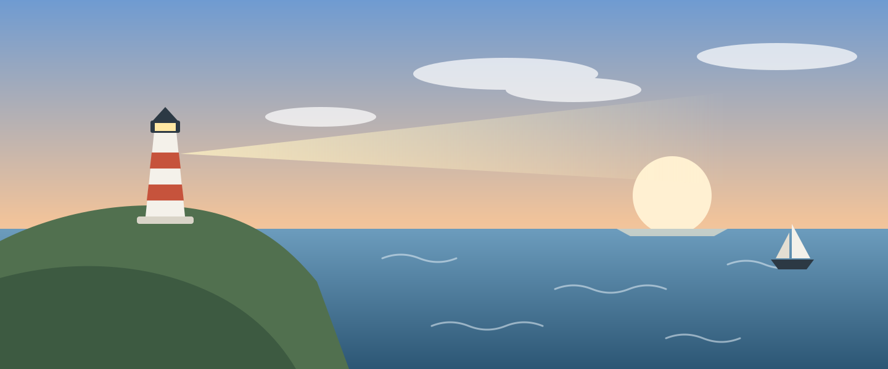
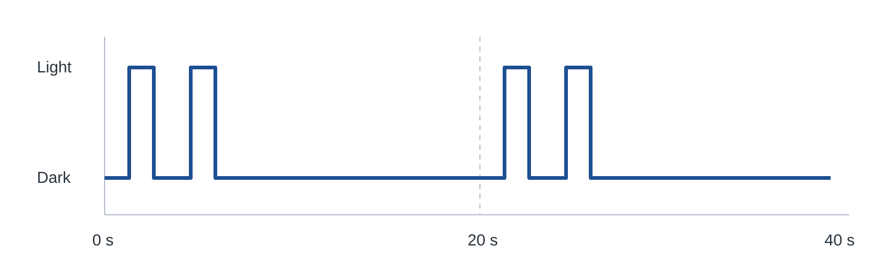

Coast · 6 minute read
How a lighthouse keeps its time
Every lighthouse flashes in its own pattern. Sailors call it the character of the light, and it lets them tell one headland from another on a dark night.

The lamp itself never switches off. A rotating lens gathers its light into a few narrow beams, and each beam sweeps past the horizon like the spoke of a wheel. From a boat, a beam passing over looks like a flash. The time between flashes is set by how fast the lens turns.
Older lights were turned by a weight on a chain, wound up by hand like a clock. The keeper climbed the tower every few hours to wind it again. Today a small electric motor does the same work, and a timer checks the speed.
Reading the pattern
Charts print the pattern next to each light. "Fl(2) 20s" means two flashes, repeated every twenty seconds. Count the flashes, time the gap with a watch, and the chart tells you which light you are looking at.

| Light | Pattern | Seen from |
|---|---|---|
| Tern Point | Fl(2) 20s | 18 miles |
| Saddle Rock | Oc 6s | 11 miles |
| Marram Spit | Fl 5s | 9 miles |